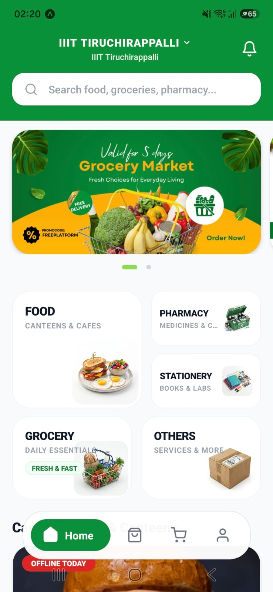

VAAYU is IIIT Trichy's own delivery service for food, groceries, pharmacy and stationery — picked, packed and delivered straight to the Main Gate.

Two daily slots for grouped orders, or skip the wait with Instant Delivery — every order lands at one predictable spot.
Choose the Lunch or Dinner slot and your order arrives within that window, bundled with campus-wide orders.
₹5 fee under ₹150 · free aboveNeed it now? Instant orders are picked and delivered to the Main Gate within 20 minutes of confirmation.
₹10 flat feeEvery order is handed over at the IIIT Trichy Main Gate — no confusion about where to meet your delivery.
Food & canteens, pharmacy, stationery, groceries, and everything else you'd normally leave campus for.
From breakfast plates to lab notebooks — order it in the app and collect it at the gate.
A real, fixed sequence — this is exactly what happens after you place an order.
Pick your items, your slot or Instant Delivery, and confirm the order.
Your order is prepared for the chosen slot or dispatched right away.
You get a phone call the moment your order reaches the Main Gate.
Pay on pickup and take your order — promptly, to keep the line moving.
Our support team is one email away — replacements, missed pickups, or anything in between.
Contact VAAYU Support